〔 名冊 〕
名冊始祖 一房名冊 二房名冊 三房名冊 五房名冊 1 郭戇 111 郭添旺 112 郭銘鐘 121 郭棹 1211 郭彰文 1212 郭嘉文 121S1 郭芳秀 12S1 郭嫌 2 郭石 21 郭燦城 211 郭瑞慶 212 郭瑞榮 2121 郭旭崧 2122 郭旭達 212S1 郭麗珊 213 郭瑞麟 21S2 郭素玉 21S3 郭高 21S4 郭憲 22 郭乞 221 郭瑞華 2211 郭文超 2212 郭文群 221S1 郭佩芬 222 郭瑞星 223 郭邦雄 224 郭瑞徵 225 郭瑞隆 22S2 郭照月 22S4 郭和月 3 郭振英 31 郭天註 311 郭家祿 311 網頁 312 郭秀雄 3121 郭崇仁 3122 郭崇榮 312S1 郭麗雯 313 郭秀信 31S1 郭淑貞 321 郭一成 33 郭天錫 34 郭增輝 5 郭雲漢 51 郭火炎 511 郭伯偉 5111 郭友倫 511S1 郭友恂 512 郭仲傑 513 郭叔雄 5131 郭友信 5132 郭友修 5133 郭乃誠 513S1 郭斐俐 514 郭季彥 515 郭舜五 51S1 郭璧如 51S2 郭圭如 51S3 郭郁如 51S31 賴立倫 51S32 賴正倫 51S3S1 賴慧倫 52 郭水 53 郭石瑞 531 郭子寬 5311 郭柏佑 531S1 郭千瑜 531S2 郭千萍 532 郭弘斌 5321 郭冠麟 5322 郭龍 533 郭博安 533S1 郭千華 533S2 郭千維 53S1 郭敏子 54 郭敬心 541 角井浩 5411 角井群仁 5412 角井群太 54S1 角井敏子 54S2 郭淑津 54S3 角井芳子 54S4 郭惠文 55 郭大德 55S2 郭細吟 56 郭敬祥 57 郭大壽 58 郭大全 59 郭敬堂 591 郭銘彰 592 郭穎哲 59S1 郭秀玲 59S2 郭昭文 5T 郭敬忠 5S1 郭月娥 5S2 郭青女 5S3 郭月嬌 5S4 郭月卿 5S5 郭月霞 5S6 郭月蟾 5S7 郭月仙 5S8 郭月美 5S9 郭月明5-3 郭石瑞 1914 ~ 1989
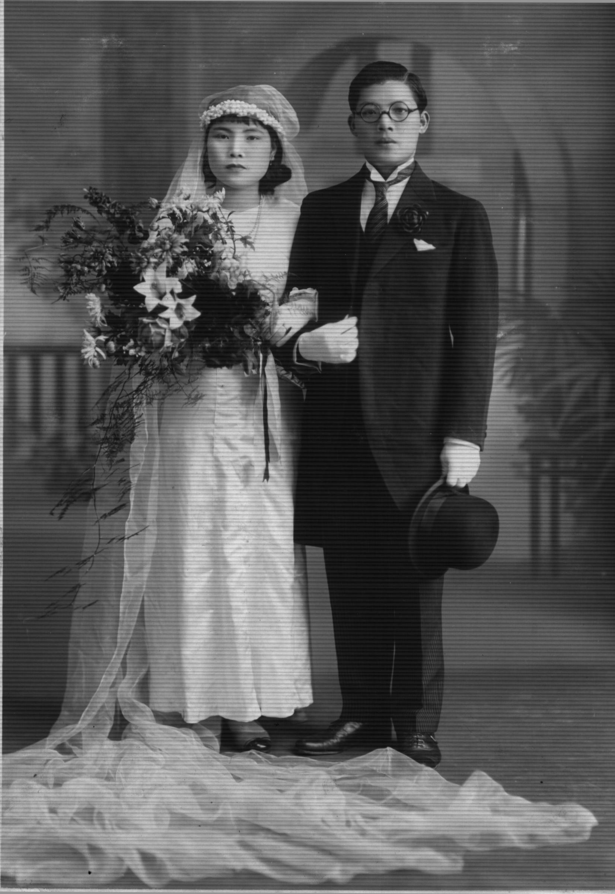
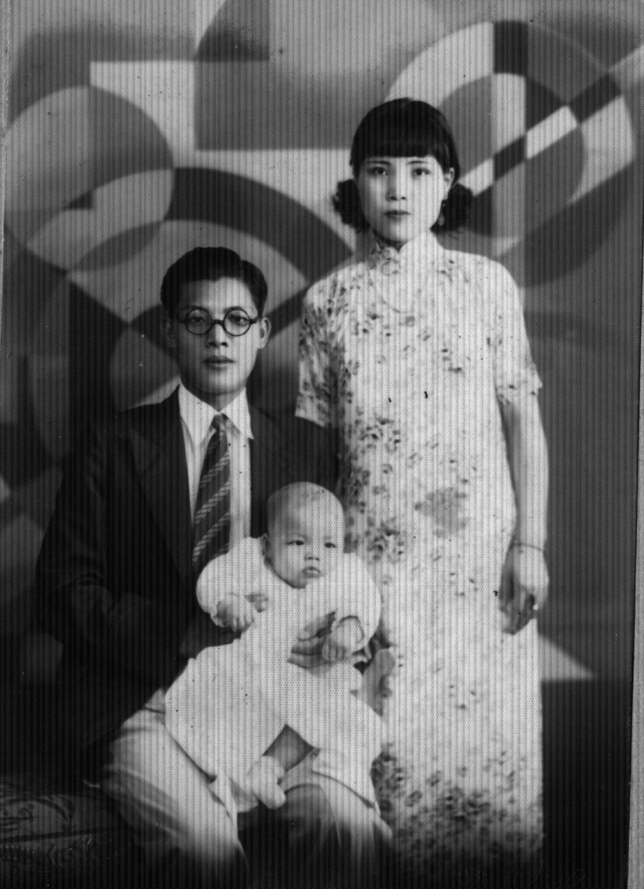
5-3 郭石瑞 5-3W 林浦珠 1935 5-3 郭石瑞 5-3-1 郭子寬 5-3W 林浦珠 1936
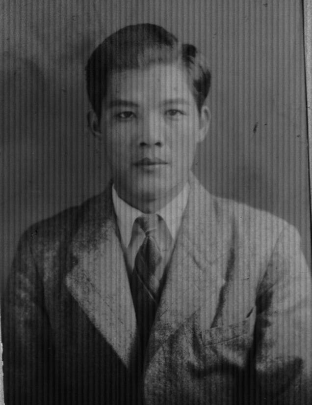
5-3 郭石瑞 1934 5-3 郭石瑞 1940 5-3 郭石瑞 1956
53石瑞 1970
郭石瑞 1940
1935
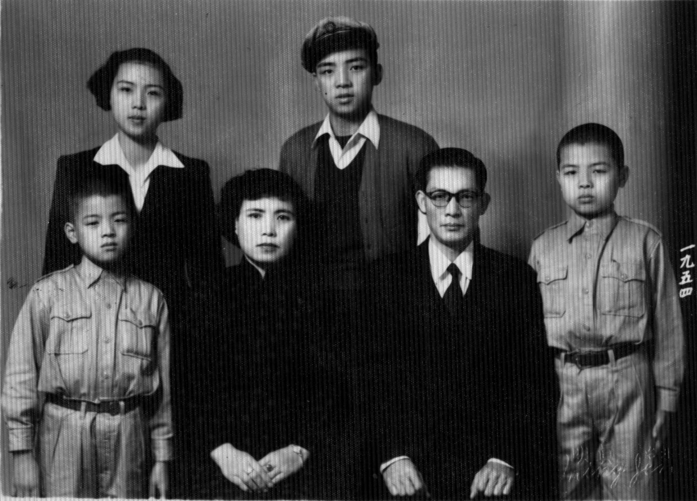
533郭博安，53S1 郭敏子， 53W林浦珠， 531郭子寬， 53郭石瑞 ，532郭弘斌
1954 全家福
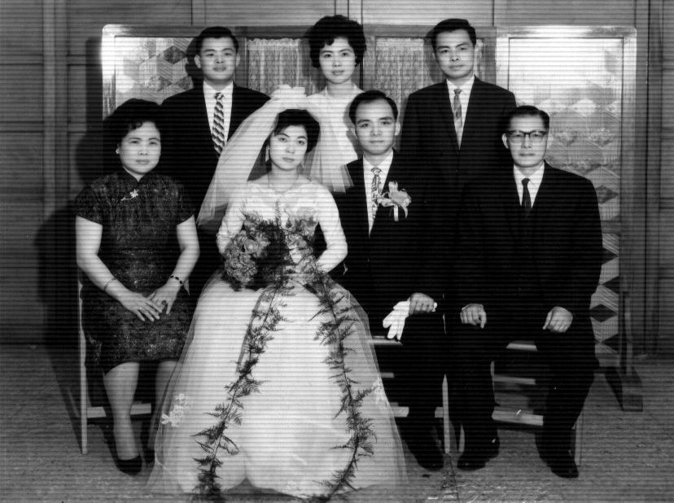
533博安 ,53S1敏子, ,532弘斌,
53W林浦珠、531W李玲玲、531子寬、53石瑞 1964年合照
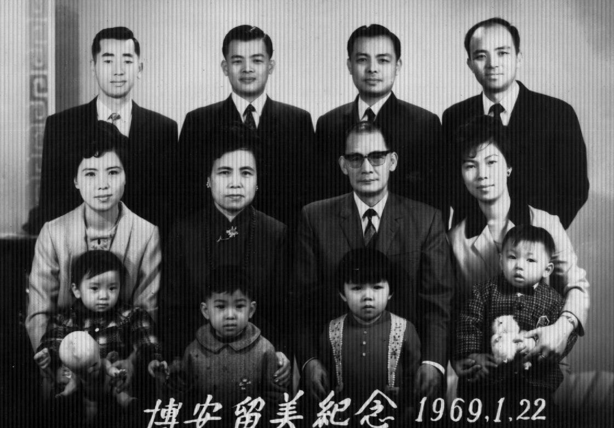
53S1H陳炯榮、533郭博安、532郭弘斌、531郭子寬
53S1郭敏子、53W林浦珠、53郭石瑞、531W李玲玲
53S1S1陳怡穎、53S11陳怡嘉、531S1郭千瑜、5311郭伯佑 1969
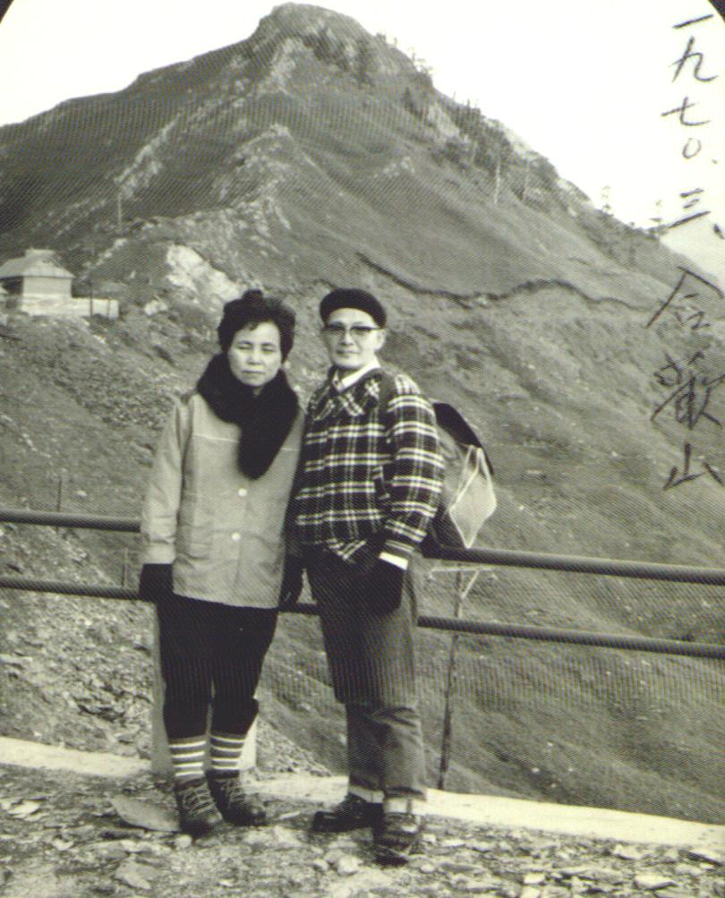

1970 合歡山，


1975

1970 登富士山
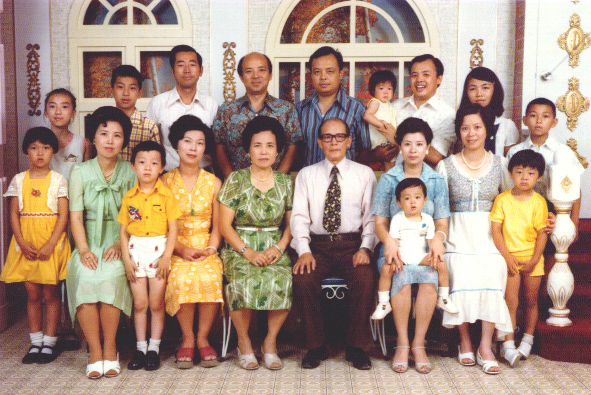
後排: 53S1S1陳怡穎、53S11陳怡嘉、53S1H陳炯榮、531郭子寬、532郭弘斌
533S1郭千華、533郭博安、533S1郭千瑜、5331郭柏佑
前排: 533S2郭千萍、53S1郭敏子、53S12陳怡仲、531W李玲玲、53W林浦珠、53郭石瑞
5322郭龍、532W郭呂淑惠、533W毛小靈、5321郭冠麟 1978
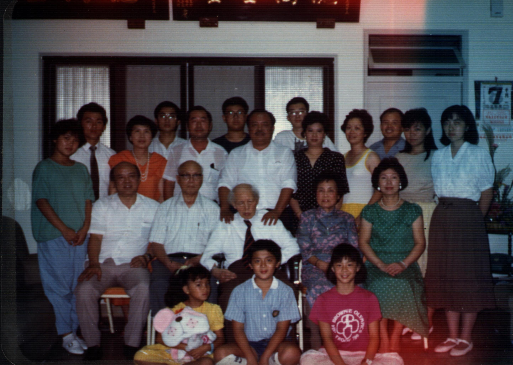
531S2郭千萍、5311郭柏佑、53S1郭敏子、53S11陳怡嘉、53S1H陳炯炯、
5321郭冠麟532郭弘斌、53S12陳怡仲、532W呂淑惠、533W毛小靈、533郭博安、
531S1郭千瑜、53S1S1陳怡穎
531郭子寬、533WF毛鴻、53郭石瑞、53W郭林浦珠、531W李玲玲
533S2郭千維、5322郭龍、533S1郭千華 1987 合照
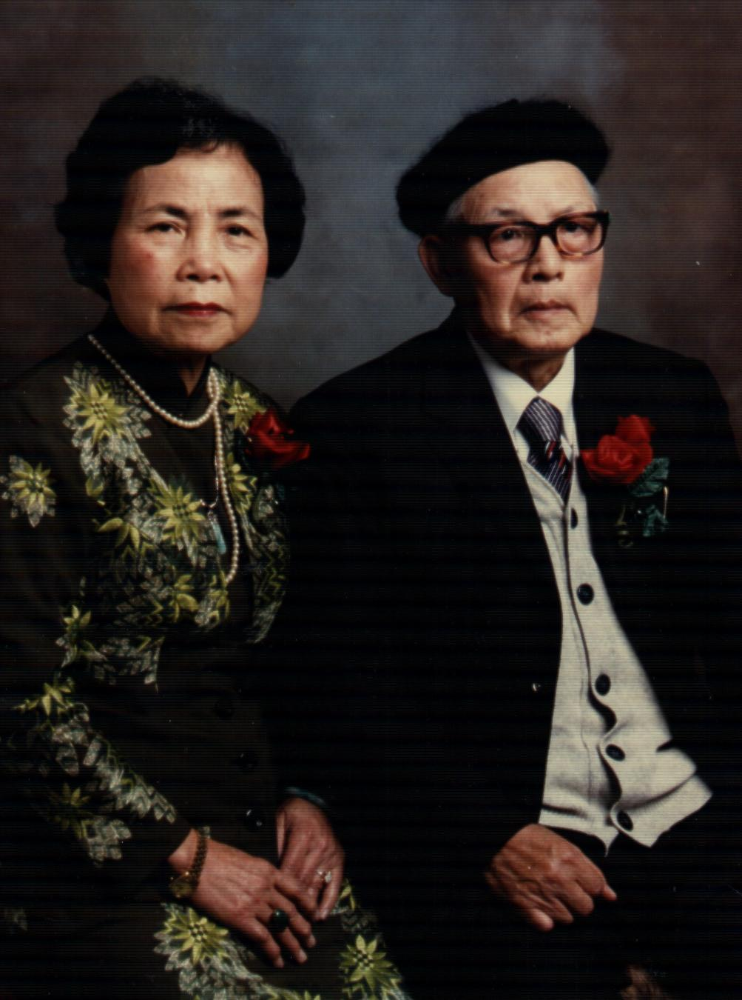
53郭石瑞夫婦金婚照 1988 53W 林浦珠 73歲
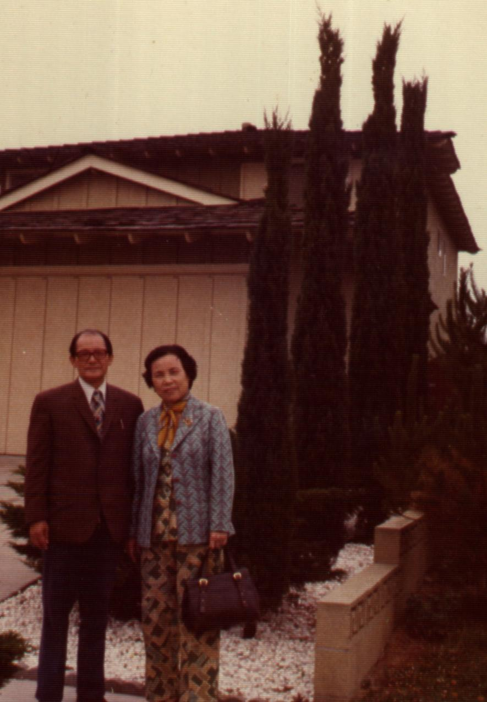
登七卡山 住美國LA五年
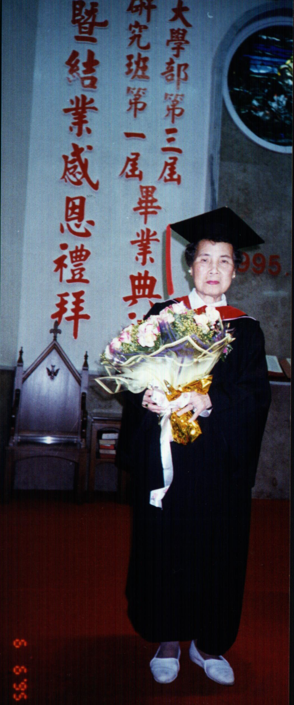
53W 林浦珠 1995 1998